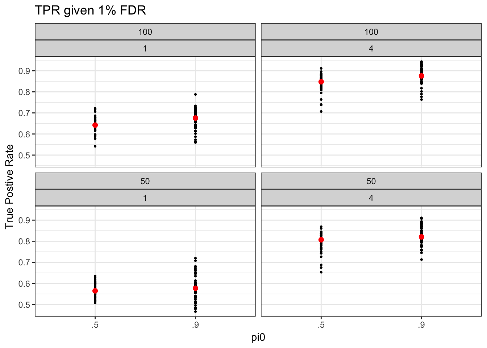
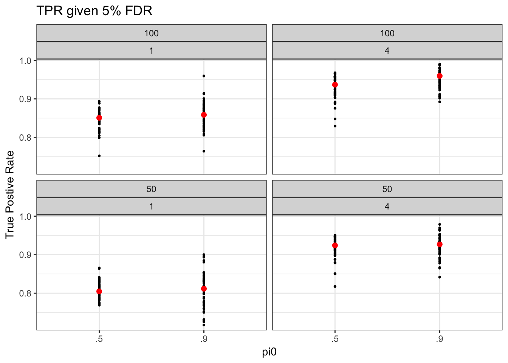

Last updated: 2017-10-19
Code version: 861184a54d0981caa0791fd3a31ddee6995fa00b
We will compare and evaluate methods based simulated datasets that are generated based on real datasets of single cell RNA-seq and bulk RNA-seq. These simulated datasets will permit us to evaluate the power performance of the methods while controlling for important parameters: number of sequencing samples, number of genes, depth of coverage, fraction of true DE genes. Most importantly, our simulation approach preserves the sample correlation structure in each sequencing datasets and thereby provides “realistic” evaluation datasets.
We will generate three major classes of simulated datasets:
1. single cell RNA-sequencing datasets, including both UMI and read-based count data
2. bulk RNA-sequencing data, using GTEx liver samples
3. thinned bulk RNA-sequencing data
The simulation parameters are:
1. Number of sequencing samples/group: n = 40, 80, 200, 500 (the upper limit is fixed for each dataset; expect higher number for drop-seq and at most 90~ for Fluidigm C1)
2. Number of genes: G = 1,000
3. Number of simulated datasets: M = 50
4. Fraction of null genes: \(\pi_0 \in \{ .5, .9, 1\}\)
5. Thinning parameter: \(\theta \in {.001, .01}\) 6. Effect size distribution: \(\hat{\beta}_g \sim N(0, 1)\)
Here we briefly summarize the steps in simulated data generation: 1. Take a subset of \(G\) genes,
2. Take a subset of \(2n\) samples and assign the samples to two arbitrary biological conditions: either same labels at each gene (preserve correlation structure) or different labels at each gene (no sample correlation),
3. Modify the expression count data to add signal.
The method of adding signals has been previously described: ash (?), vash (?), and Gerard and Stephens (RUV and mouthwash). For the motivation of this approach, see the main text in Gerard and Stephens (RUV) for a detailed description. The overview here closely follows the text in Gerard and Stephens (RUV).
We add signals to the null datasets in a randomly selected fraction of genes \(\pi_1 = 1 - \pi0\) (\(\pi_1 = .1\) or \(.5\)). The signals \(\beta_g\) are randomly sampled from a \(N(0, ?)\). the standard deviation was chosen so that the classification would be neither too easy nor too hard (?). Let
\(\beta_{g1}, \dots, \beta_{g \pi_1*p} \sim N(0, s^2)\)
be the effect sizes, where \(gl \in \Omega\), the set of non-null genes. Then we drew a \(\mathbf{Z}\) matrix of the same dimension as the expression count matrix \(\mathbf{Y}\) by
\[ z_{igl} | y_{igl} \sim \begin{cases} \text{Binomial}(y_{igl}, 2^{\beta_{gl} x_{i}}) & \text{if $\beta_{gl} < 0$ and $gl \in \Omega$},\\ \text{Binomial}(y_{igl}, 2^{-\beta_{gl} (1-x_{i})}) & \text{if $\beta_{gl} > 0$ and $gl \in \Omega$},\\ \delta(y_{igl}) & \text{if $jl \notin \Omega$}, \end{cases} \]
where \(\delta(y_{igl})\) indicates a point mass at \(y_{igl}\). We then use \(\mathbf{Z}\) as our non-null expression count matrix.
As a rule of thumb, large \(s^2\) generates large effect sizes and thus DE classification is easier. To help choosing the value of \(s^2\), I compute the fraction of true positive genes (fraction of true signals classifed as DE) given 5% and 1% false positive rate (proportion of nulls classifed as DE) under the parameter setting:
limmaVoom was used to perform DE analysis. Overall, a stringent FDR threshold makes classification more difficult (lower TPR compared when 1% FDR compared to 5% FDR) under different sample size, fraction of null genes, and \(s^2\). About the parameter settings, all but fraction of null genes may affect TPR under fixed FDR. Larger sample size is associated with higher TPR. More importantly, a large \(s^2\) is associated with high TPR - which is as expected since there are more large effect sizes.
When choosing \(s^2\), the rule of thumb is setting a value of false positve rate that makes the classification neither easy nor difficult. We chose a value of \(s^2\) such taht TPR is about 50%. (maybe report results under other \(s^2\) values in the supplemental materials). For now, we choose 1% FDR and \(s = 1\).
make_tpr_plot(tpr01_long, title = "TPR given 1% FDR")Warning: package 'dplyr' was built under R version 3.4.2
Attaching package: 'dplyr'The following objects are masked from 'package:stats':
filter, lagThe following objects are masked from 'package:base':
intersect, setdiff, setequal, union
make_tpr_plot(tpr05_long, title = "TPR given 5% FDR")
question: what parameter values are required for shape A and shape B to have the same TPR under fixed FDR, sample size, and pi0
In Soneson and Robinson (2017), the simulated datasets include a subset of single cell samples but all of the genes in the original datasets.
R version 3.4.1 (2017-06-30)
Platform: x86_64-apple-darwin15.6.0 (64-bit)
Running under: macOS High Sierra 10.13
Matrix products: default
BLAS: /Library/Frameworks/R.framework/Versions/3.4/Resources/lib/libRblas.0.dylib
LAPACK: /Library/Frameworks/R.framework/Versions/3.4/Resources/lib/libRlapack.dylib
locale:
[1] en_US.UTF-8/en_US.UTF-8/en_US.UTF-8/C/en_US.UTF-8/en_US.UTF-8
attached base packages:
[1] stats graphics grDevices utils datasets methods base
other attached packages:
[1] bindrcpp_0.2 dplyr_0.7.4 ggplot2_2.2.1
loaded via a namespace (and not attached):
[1] Rcpp_0.12.13 bindr_0.1 knitr_1.17 magrittr_1.5
[5] munsell_0.4.3 colorspace_1.3-2 R6_2.2.2 rlang_0.1.2
[9] stringr_1.2.0 plyr_1.8.4 tools_3.4.1 grid_3.4.1
[13] gtable_0.2.0 htmltools_0.3.6 yaml_2.1.14 lazyeval_0.2.0
[17] rprojroot_1.2 digest_0.6.12 assertthat_0.2.0 tibble_1.3.4
[21] glue_1.1.1 evaluate_0.10.1 rmarkdown_1.6 labeling_0.3
[25] stringi_1.1.5 compiler_3.4.1 scales_0.5.0 backports_1.1.1
[29] pkgconfig_2.0.1 This R Markdown site was created with workflowr